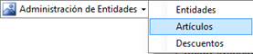
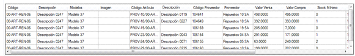
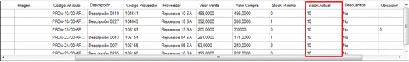

ACLARACIÓN: También puede consultar en Informes de Inventario.
1. Para el stock un artículo de proveedor debemos hacer clic en el botón 
2. Dentro de la ventana "Artículo", debe ingresar (opcional) datos del artículo original
buscado y luego presionar el botón  .
.
3. En la ventana emergente, se muestran los resultados de la búsqueda y puede seleccionar
el artículo deseado.
4.Ya autocompletados los datos del artículo se visualiza en la grilla inferior aquellos artículos de proveedor asociados al artículo. Seleccionamos el artículo desde la
grilla con un clic y automáticamente se completan los campos del cuadro de Artículos de
proveedor, dentro de los cuales puede visualizar en el campo ,
o en la grilla anterior 